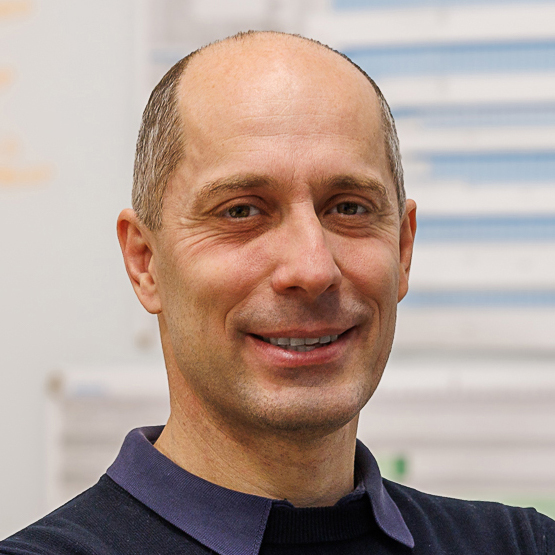

About the Special Session
Transportation and logistics involve complex optimisation problems characterised by dynamic operating environments, uncertain demand, large search spaces, operational constraints and multiple, often conflicting objectives.
This special session focuses on the use of evolutionary computation to address optimisation problems arising in transportation, mobility and logistics. It welcomes both methodological contributions and application-oriented studies involving evolutionary and hybrid optimisation approaches.
Contributions may address the design, adaptation and evaluation of evolutionary algorithms for realistic transportation problems, including issues related to uncertainty, scalability, computational cost and multiple objectives.
Topics of Interest
Topics of interest include, but are not limited to:
- Evolutionary algorithms for vehicle routing and scheduling
- Traffic signal control and transportation network optimisation
- Public transport, shared mobility and demand-responsive transport
- Sustainable mobility, electric vehicles and charging optimisation
- Freight transportation, urban logistics and supply chain optimisation
- Transportation infrastructure planning and network resilience
- Multi-objective and many-objective optimisation
- Dynamic, stochastic and robust optimisation
- Simulation-based and surrogate-assisted evolutionary optimisation
- Hybrid evolutionary algorithms and matheuristics
- Learning-assisted, adaptive and distributed evolutionary algorithms
- Benchmarking and experimental evaluation of evolutionary methods in transportation
Submission
Original and unpublished research papers are welcome. Following acceptance of the special session proposal, submissions will be handled through the official IEEE CEC 2027 submission system and will follow the conference's review and publication procedures.
IEEE CEC 2027 Call for PapersImportant Dates
| Full Paper Submission Deadline | |
| Paper Acceptance Notification | |
| Final Paper Submission Deadline | |
| IEEE CEC 2027, Edinburgh |
Dates are subject to change. Please refer to the official IEEE CEC 2027 website for the latest information.
Organisers


